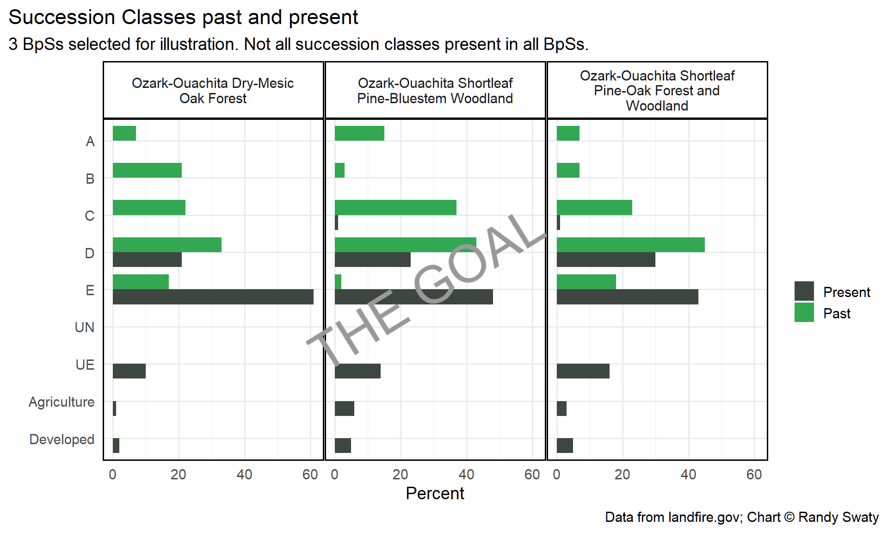

Swaty’s Little Code Challenge
The Challenge
Simply, I want you to use your skills and craftiness to make this chart:

That’s all.
Data Dictionary
Often people do this to me, i.e., they send me a chart or something to reverse engineer, and will send along datasets. I will be nice and describe them to you. First, some terms (I am being so very kind):
- Biophysical Setting (BpS): a dominant ecosystem that would have been on the landscape prior to European colonization. Mapped by using regression trees and inputs such as soils, surficial geology, slope, elevation and aspect.
- Succession class (SCLS): a developmental/structural stage of a BpS. These are definted by vegetation height, cover and type. Succession classes are definited with custom rulesets for each BpS so succession class D may mean one thing in one BpS, and a different thing in another.
- Reference Conditions (often called refcon or similar): we attempted to estimate how much of each SCLS would have been on the landscape prior to European colonization using state-and-transition modeling. These estimates are often called ‘reference conditions’ or refcon.
- Area of Interest (AOI): the place we care about, or the bounding polygon for the analysis. In this case it is the Ouachita National Forest in SW Arkansas.
Second, the input datasets:
- bps_aoi_attributes: the historical escosystems, plus many other attributes, for our AOI. Note a few important fields:
- Freq-this is the number of 30M x 30M pixels per BpS
- BPS_NAME
- BPS_MODEL-this is probably important :)
- bps_model_name: you may or may not need this. Has the BpS model numbers and the associated names.
- combine_raw: this has the current (as of 2022) amounts of succession classes per BpS. Yes it does.
- LF16_BPS_200: the BpS attributes for the entire lower 48 states. You may or may not need this.
- ref_con_modified: this has the reference percentages for each succession class for each BpS
- scl_attributes: the fields and values for the AOI succession classes. I think you will need this?
Some hints
First, you know how to do this. You will need to do things like:
- read in datasets
- merge datasets
- filter
- mutate (with calculations)
- remove fields
- pivot longer
- group_by/summarize
- do the factor-level thingie to order classes
I am pretty sure this is it.
Wait, you may not know about this tasty bit of code judo:
aoi_bps_models <- bps_aoi_atts$BPS_MODEL #subset ref_con to aoi aoi_ref_con <- subset(ref_con, Model_Code %in% aoi_bps_models)
Oh, I can’t remember have you used ‘facet_grid’?
Second, please be good coders and:
- mock up data
- make a mock chart with mock data first so you know what you are aiming for
- collaborate
- break down the problem; write out a workflow
- don’t lose your work
- QAQC your chart. I am guessing you will make some beautiful but o’ so wrong charts along the way. Don’t ask me why I think this. What would make them wrong you should ask yourself.
Third, don’t sweat the aesthetics of the chart until last
Oh geez I keep forgetting things! You might love to know how to ‘unite’. I don’t think we’ve done that. You just might want to make a custom field to do some joining/merging by.